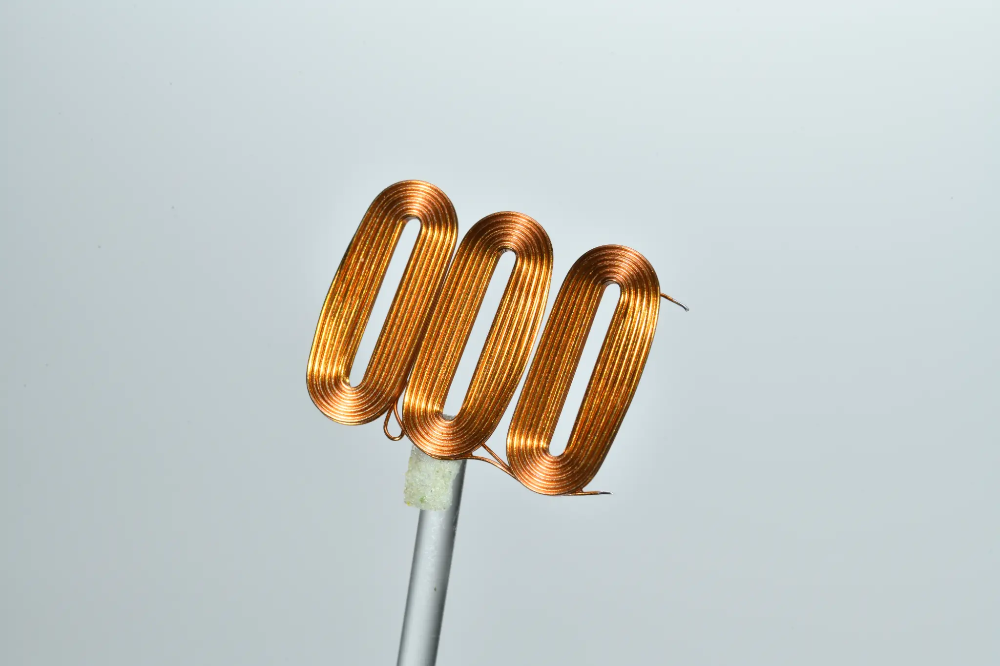
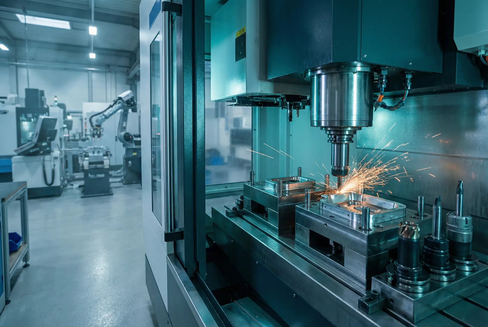
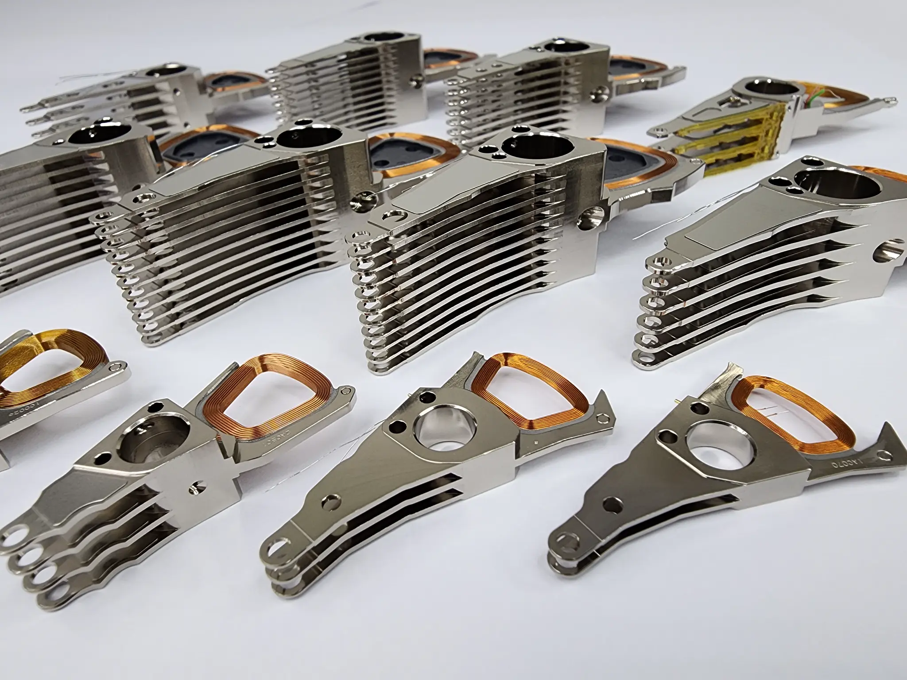
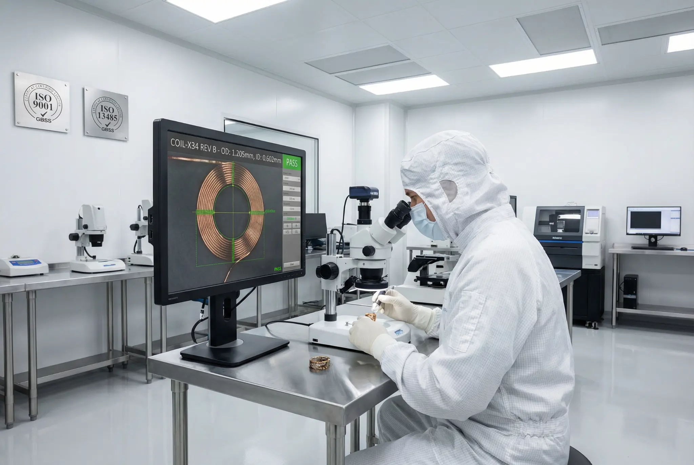

The Genesis & The Precision Coil
BENTON was established with a singular focus on ultra-precision magnetic coil winding. This core mastery laid the foundation for the company's trademark coil emblem and paved the way for high-efficiency Voice Coil Motor (VCM) actuators that define modern high-density data storage.

The Navanakorn Industrial Hub & 5-Axis CNC
In 2000, BENTON established its strategic Southeast Asian manufacturing headquarters in Navanakorn, Thailand. The facility introduced seismic-isolated granite machine beds and 5-axis CNC diamond tooling running at 60,000 RPM to craft zero-tolerance 8-blade actuator combs.

World No. 1 Supplier & iPERFECT Standard
Surpassing international benchmarks, BENTON became the world's largest supplier of Actuator Pivot Flex Assemblies (APFA). This era solidified the "iPERFECT" engineering philosophy and introduced proprietary plasma vacuum gold anodization for complete surface immunity.

STAGE A / RAW DURALUMINRojana R3 Campus & Nanometer Cleanrooms
Marking a new era of advanced manufacturing, the Rojana R3 campus integrates ISO Class 100 cleanroom environments and dual-beam 1064nm laser riveting. Here, flexible Kapton polyimide circuits are bonded with nanometer accuracy to support global AI cloud infrastructure.

Sub-Micron Tolerance Inspection
Execute laser metrology to verify APFA component tolerances against BENTON aerospace-grade standards.
"Integrity / People / Excellence / Respect / Flexibility / Execution / Customer Focus / Teamwork"